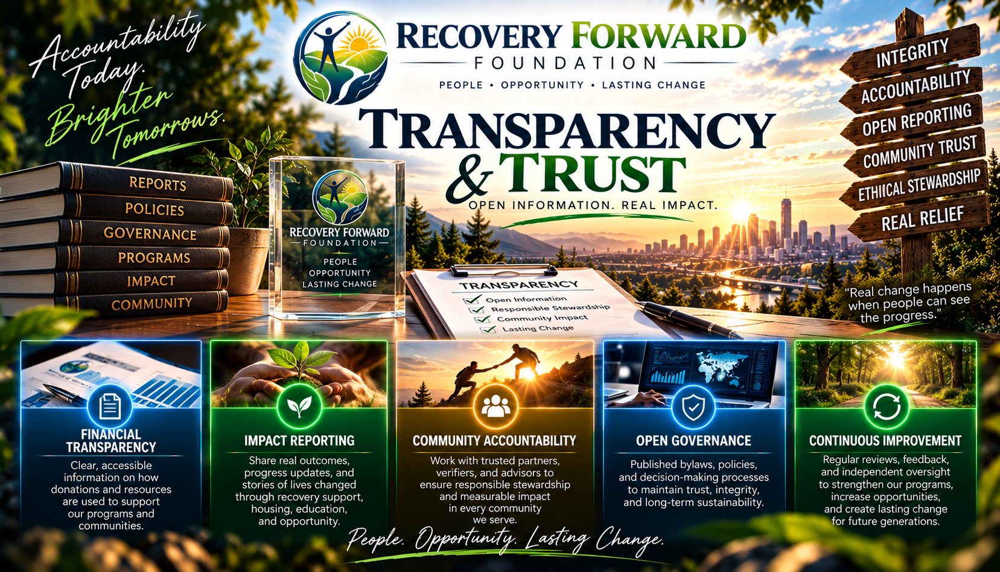

ACCOUNTABILITY • PRIVACY • TRUST
TRANSPARENCY
FROM THE START.
Recovery Forward Foundation is being built with accountability at its core. As the organization grows, this page will provide a public view into our governance, programs, grant activity, policies, and financial reporting.
ACCOUNTABILITY
Trust should be earned.
People who seek assistance, volunteers, community partners, and donors should be able to understand how Recovery Forward Foundation operates and how resources are intended to be used.
Our transparency framework is being developed around responsible governance, documented decisions, privacy-conscious grant tracking, and clear program requirements.

OUR TRANSPARENCY GOALS
What we are working toward.
Financial Transparency
As financial activity develops, the foundation intends to provide clear, accessible information about donations received and how resources are used.
Impact Reporting
Aggregate program statistics and outcomes can be shared without identifying participants.
Community Accountability
The foundation intends to work with trusted partners, verifiers and advisors so that assistance is responsible and measurable.
Open Governance
Bylaws, policies and decision-making processes can be published as they are formally adopted.
Continuous Improvement
Programs and processes are meant to be reviewed over time and strengthened based on feedback and results.
Governance
Foundation governance documents, board structure, organizational policies, and other appropriate public records can be published as they are formally adopted.
Program Rules
Grant and assistance programs should have documented eligibility requirements, review procedures, authorization rules, and funding limitations.
Grant Accountability
Recovery Forward Foundation is developing a structured registry for tracking grant progress through defined stages without unnecessarily publishing applicants' personal information.
Financial Reporting
As financial activity develops, appropriate reports and disclosures can provide insight into funding received, program expenditures, grants, and organizational expenses.
Verification
Program milestones and grant approvals are being designed around documented verification and authorization procedures rather than informal or undocumented decisions.
Privacy
Transparency does not mean exposing someone's recovery history. Public accountability should coexist with meaningful protection of applicant privacy.
RECOVERY GRANT REGISTRY
Accountability without putting people on display.
Recovery Forward Foundation is developing a privacy-conscious grant registry that uses unique RCGI identifiers instead of publicly identifying participants by name.
Registered
An application has entered the grant process.
Milestone Pending
Applicable recovery requirements have not yet completed the verification process.
Verified
Required milestone information has completed the applicable verification process.
Eligible
Program requirements have been satisfied for eligibility consideration.
Approved
Assistance has received the required authorization under the applicable program.
Paid
An approved grant payment has been recorded through the applicable process.
PRIVACY MATTERS
Transparency should protect dignity.
A person's participation in recovery should not require their private history to become a public record.
The public-facing registry is being designed around random RCGI identifiers and program status information rather than unnecessary personal information such as names, Social Security numbers, home addresses, or private medical details.
Recovery Forward Foundation will never ask applicants to provide cryptocurrency passwords, wallet seed phrases, or private keys.
FOUNDATION STATUS
We're building the infrastructure now.
Recovery Forward Foundation is currently developing its programs, governance framework, application infrastructure, grant registry, and public accountability systems.
As formal documents, financial reports, program statistics, and grant activity become available, this transparency center can be expanded to publish appropriate information.
PUBLIC REPORTING
What you'll eventually find here.
Governance Documents
Adopted bylaws and appropriate organizational policies.
Program Statistics
Aggregate application, eligibility, approval, and grant statistics without exposing applicant identities.
Financial Information
Appropriate financial reporting and required public filings as they become available.
Grant Activity
Privacy-conscious information showing how foundation assistance is being put to work.
RECOVERY FORWARD FOUNDATION
Compassion with accountability.
Our goal is simple: help people move forward while building a foundation that participants, communities, and supporters can trust.